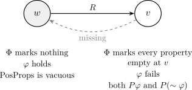
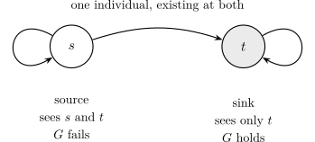

Benzmüller and Scott leave open whether Theorem Th3 of their actualist Figure 7—possible existence of a God-like being implies necessary existence, with \(P(G)\) derived from Ax1Gen, the AFP abbreviation of the footnote’s generalization—is provable in S4, and they leave two related questions open [9]. Benzmüller has since settled all three [6]. Under Ax1Gen, Th3 holds already in K, by a hybrid-free proof that turns on the empty conjunction. Under his emendation Ax1GenTwo, which requires at least two different conjuncts, the questions are settled again, hybrid-free under stated side conditions, and for Figure 8 only after a further emendation. The answer this note gave first is superseded by that paper, and it is weaker in two ways. The Ax1Gen instance it checked, in session Ax1Gen_EmptyAtHome_Check on Isabelle2025-2, is empty at the world of evaluation, so it is one of the degenerate instances that Ax1GenTwo excludes. Its witnesses are a nominal and a world-indexed collection, and Benzmüller’s Lean detector flags both as NOMINAL RIGID. The symmetry, identity, and collapse theorems below are therefore theorems of the shallow embedding with full comprehension, not of the modal object language. What remains of this note is a comparison of where Ax1Gen reads \(\Phi \). Two reconstructions make both halves of Ax1Gen read \(\Phi \) at the same world: positivity inside the box, or a world-invariant \(\Phi \). Both yield \(P(G)\) and fail on a two-world S4 chain. For the world-invariant reading, Benzmüller’s ancillary session B lists the derivability of \(P(G)\) as open. Our lemma_L_rigid builds on the theory GoedelVariantHOML2inS4 in Benzmüller and Scott’s AFP entry Notes_On_Goedels_Ontological_Argument [10], and its snapshot-and-agreement step uses the same move as Th4_finitein arXiv:2608.07578 [4]; our commit b23cc28 cited arXiv:2608.07578, for a different result, 31 minutes before 27524f7, and our records do not show whether Th4_finite was read. It proves L for the rigid-\(\Phi \) variant he later lists as Candidate B (Ax1GenR), in commit 27524f7, merged 24 September 2026 (20:51 UTC), four days before arXiv:2609.36279 v1 (28 September) [6]. We checked arXiv:2609.26806 v1 [5], the Monatshefte paper [9], the AFP entries, and his public repositories as of that date and found no statement of Candidate B or of L as open under it. Section 6 replays it in his Isabelle and Lean encodings. Combining the world-invariant restriction with his two-conjunct restriction gives a reading, Ax1GenTwoR, that meets his requirements (i) and (ii) and still has genuine Nitpick countermodels to the actual existence of a God-like being at every world and to collapse in K, and to Th3 on S4 frames. His equivalence of Ax1GenTwo with Ax1Gen in the presence of nominals runs through a world-dependent collection, which the rigid reading excludes, and a genuine Nitpick countermodel confirms that Ax1GenTwoR does not give Ax1Gen back. The reading is small, and its Figure 8 and Scott forms are unchecked. The Lean development of this repository is Lean 4.34.0. Benzmüller’s port of the AFP dataset [5] and the package of [6] are separate trails on Lean 4.33.1.
Three objects have to be kept apart, as Benzmüller and Scott set them out [9]. The first is Gödel’s own hand manuscript of 1970, reproduced as their Figure 1. The shelfmark they give is Kurt Gödel Papers, Box 12, Folder 41, item accession 060565. The figure is printed with the copyright of the Institute for Advanced Study. The second is the brief notes Gödel showed Scott. Those notes were very brief compared with the 1970 manuscript. The third is the slightly modified version Scott discussed in a Princeton seminar, printed as Appendix B of Sobel [18, 20]. The Archive of Formal Proofs entry of 7 January 2025, and the Lean transcription in this repository, use the Scott-repaired essence of their Figure 7 [10]. Neither file is a transcription of the hand page. Nor is the 1970 essence manuscript the only ontological draft in the Nachlass. Lethen describes an early version, found in the Nachlass in 2018, that does not rely on essential properties [15]; this note goes on the abstract of that paper and has not read its body.
In spring 1970, at the Princeton Philosophy Department, Gödel asked Scott confidentially to preserve some papers and notes in case of illness or death. One of the notes was a brief sketch of an ontological argument. Soon after, Scott mentioned the proof in a modal-logic seminar without permission. The version he mentioned was one he had slightly modified. He records that he still feels embarrassed, and that he left Princeton soon after for the chair in mathematical logic at Oxford and did not discuss the matter with Gödel [9].
The hand manuscript’s binary axiom says that the conjunction of two positive properties is positive. A footnote adds “and for any number of summands”: the conjunction of a collection of positive properties is itself positive. Scott’s seminar notes replace that generalization by a direct postulate that being God-like is positive, his axiom A3 [18, 9].
The hand definition of essence omits the exemplification conjunct \(\varphi \,x\). Benzmüller and Scott reconstruct the inconsistency from the empty-essence lemma \((\lambda x.\,\bot )\,\mathrm {Ess.}\,x\). The derivation of falsity they give is already valid in the modal logic K. The Lean 4 port’s #print axioms for Inconsistency in GoedelVariantHOML1, on Lean 4.33.1, lists Ax2a, Ax3, Ax4, and iNonempty, the existence of at least one world, and no frame condition [5]. A cross-check in that paper replays the Isabelle proof after importing HOMLinHOLonlyK, under Isabelle2025-2. The bound is on that proof. The 1970 hand page remains Box 12, Folder 41, accession 060565, and the port’s Figure 7 module remains Scott’s repaired essence. Scott’s addition of the conjunct \(\varphi \,x\) forces an essential property of an individual to hold of that individual, blocks the empty-essence lemma, and restores consistency of the package in their Figure 7 [9]. The essence clause in Section 2 is that repaired definition. It is Scott’s repair, not the hand manuscript’s.
Jordan Howard Sobel later showed that Scott’s premises collapse modality: whatever is true is necessarily true [19, 20]. The collapse has since been checked in Isabelle/HOL, going on the report of Benzmüller and Fuenmayor, and so have repairs in the spirit of Anderson and of Fitting [1, 12, 7]. Those repairs avoid collapse by weakening the axioms, and going on the summary of Mühlenbeck and Benzmüller [16] the price is the ultrafilter maximality of the positive properties, so they are not Gödel’s maximum unchanged. Separately, the passage from “possibly God-like” to “necessarily God-like” on the Scott side needs symmetry of accessibility, the modal axiom B, and does not need the rest of S5 [14]. Those facts are recorded again in Section 7 so that they are not mistaken for the theorems below. For Figure 7, collapse is the question. The S5 theory GoedelVariantHOML2 already proves
from Ax2a, Ax2b, Th5, the definition of God-likeness, and symmetry of \(R\) [10]. Applied to the world-proposition “the world is \(w\)”, that lemma already confines \(R\) to the identity. The same theory checks consistency only by nitpick[satisfy, card=1].
The question comes from a return to the footnote. Christoph Benzmüller and Dana Scott, in the Monatshefte für Mathematik [9], and in the matching Archive of Formal Proofs entry [10], study the footnote’s generalized conjunction as Ax1Gen, the AFP abbreviation of that footnote. Positivity of being God-like is not assumed. It is lemma L, derived from Ax1Gen. The essence in that Figure 7 is Scott’s, with the conjunct \(\varphi \,x\). Individual quantifiers in the argument are actualist: an existence predicate says who is around at a world. In their Figure 7, Theorem Th3 is
In the S5 embedding the proof uses symmetry of the accessibility relation and nothing else from S5. The theory GoedelVariantHOML2inS4 repeats the same non-logical axioms over an S4 frame (reflexive and transitive, symmetry not assumed) and leaves Th3 as oops, with the comment “Open problem”. The header of that theory says that the proof of Th3 fails in S4. Figure 8, which repairs the argument by changing necessary inclusion instead of essence, has the same open oops in GoedelVariantHOML3inS4. The authors’ formalization reports neither an S4 proof nor an S4 countermodel. The oops in GoedelVariantHOML2inS4 is that theory’s Ax1Gen, the literal abbreviation. It is not a different reading of the axiom. Their S5 proof of Th3 uses symmetry of accessibility, only the B schema; S5 is not required [9, 10]. Figure 8 leaves the same oops. The Figure 8 goal is not the Isabelle check recorded here.
The questions are settled. Benzmüller’s Proofs Without Nominals [6] (arXiv v1 of 28 September 2026, v2 of 1 October 2026, read in full for this revision, with its ancillary files) answers the three questions the Monatshefte notes leave open: Th3 of Figure 7 in S4; Th3 of Figure 8, with the unique-essence lemmas; and T3 of Scott’s variant with Ax1Gen in place of A3. Under Ax1Gen as the AFP states it, his Theorems 2 and 4 give Th3 of Figure 7 in K, “no countermodel exists in any normal modal logic”, and collapse, by proofs that substitute only terms of the modal object language; the proofs turn on the case in which \(\Phi \) is empty. For Figure 8 he proves Th3 in K and the unique-essence lemmas hybrid-free in K (his Theorem 9), and for Scott’s variant T3 in K (Theorems 3 and 4). He then emends the axiom. Read to include the empty set and the singletons, the footnote’s “any number of summands” gives Ax1Gen, “and the two offending instances are exactly those degenerate ones”; his Ax1GenTwo requires at least two different conjuncts at the world of evaluation [6, Sect. 6]. Under Ax1GenTwo, Figure 7’s Th3 holds hybrid-free and with no frame condition when necessary existence is not the universal property or every world has an actual individual, and unconditionally only with a nominal (his Lemma 10, Theorem 11, Corollary 12). In Figure 8, Th4 is no longer derivable (his Proposition 13); the results return with Th4 postulated under a side condition (Theorem 15), or hybrid-free in a variant with Figure 8’s clause confined to the essence (Theorem 16). Scott’s T3 holds under Ax1GenTwo (Theorem 14). Once nominals are admitted, the two-conjunct restriction has no force: “the two-conjunct reading is a reading of the object language only” [6, Sect. 6.2]. His results are verified in Isabelle2025-2 and Lean 4.33.1, and his hybrid-witness detectors classify every proof: “A proof is hybrid-free if every term it substitutes for a property or proposition variable is a term of \(\mathcal {L}\)” [6, Sect. 3]. What follows in this note was written before that paper. Where it overlaps, his answers stand and this note’s are superseded; Section 6 records what is left.
That check was run. Session Ax1Gen_EmptyAtHome_Check finished on Isabelle2025-2 against the AFP 2025-2 entry Notes_On_Goedels_Ontological_Argument, the entry dated 7 January 2025. It was re-run on 2 October 2026 against an AFP checkout of 24 September 2026 and again finished (pwn36279/reports/). The check is sound, but the instance is degenerate, and it is not evidence for the footnote. The theory isabelle/Ax1Gen_EmptyAtHome.thy imports GoedelVariantHOML2inS4. It instantiates Ax1Gen at the empty-at-home collection and the world-is-\(w\) property
Lemma fig7_implies_symmetric is \(\forall w\,v.\; w\,r\,v \longrightarrow v\,r\,w\), by that instance together with Ax2b, \(\varphi \necImp {\sim }\varphi \), and Ax4, contradicting Ax2a. The dependency is this. Ax1Gen, Ax2a, Ax2b, and Ax4 derive symmetry. Adding Ax3 yields Th3, and, in Lean, \(R\) equal to the identity and modal collapse. \(R_{\mathrm {symm}}\) is not assumed as a hypothesis. Theorem Th3_via_empty_at_home is the AFP Th3 goal, proved from AFP Th2 and fig7_implies_symmetric. That is derived symmetry. It is not the Lean path through R_is_identity and MC. Those two remain Lean-only, in Audit.lean. The trail is the finished session Ax1Gen_EmptyAtHome_Check, theory isabelle/Ax1Gen_EmptyAtHome.thy, not a Lean #print axioms list. On the reconstructions of Section 5, both halves of Ax1Gen read \(\Phi \) at the same world, symmetry is not derived, and Th3 fails on the two-world chain. At the world of evaluation \(w\) the collection \(\Phi \) above is empty, because \(u \neq w\) fails there. That is exactly the empty instance that Ax1GenTwo removes, and empty_at_home_not_TwoMembers in pwn36279/isabelle checks that it is not an Ax1GenTwo instance. The property \(\varphi \) is a nominal, and \(\Phi \) names the world \(w\). Replayed in a copy of Benzmüller’s Lean module for this theory, on Lean 4.33.1, the symmetry proof has #print axioms Ax1Gen, Ax2a, Ax2b, Ax4, the signature constants, propext, Classical.choice, and Quot.sound, and his #hybrid_audit flags both witnesses NOMINAL RIGID. The proof is hybrid. Under Ax1GenTwo, symmetry follows only through his nominal one-world argument (symm_Two_hybrid).
In the same paper, binary Ax1 does not yield their Theorem Th4, the possibility of a God-like being. The provers fail on Th4 until the footnote generalization is added. Ax1Gen yields lemma L, and Th4 then follows from L, Ax2a, and Ax4. Scott’s A3 posts \(P(G)\) in place of that derivation [9, 10]. A later comment gives an explicit countermodel for binary Ax1: one world, countably many individuals, positivity a non-principal ultrafilter, empty intersection, and no God-like individual [4]. That countermodel is stated there. It is not a Lean theorem of this repository, and the Monatshefte text checked for this note does not itself exhibit it. The same comment locates modal collapse, in the packages it checks, primarily in the rigidity of positivity—Scott’s A4, which is Gödel’s Ax2b—together with essence and necessary existence, rather than in the ultrafilter alone [4]. That diagnosis is not the collapse theorem of Section 4.
For a Lean 4 transcription of that AFP text, the literal reading proves Th3 in the embedding, by hybrid witnesses, and the mechanism is collapse: the axioms force \(R\) to be the identity, so the only S4 models are discrete and Th3 holds there trivially. Two reconstructions of Ax1Gen refute Th3 on a two-world S4 chain. Among the three readings examined, with full comprehension—unrestricted property quantification—the answer turns on whether both halves of Ax1Gen read \(\Phi \) at the same world. The domains were not varied, and Figure 8 was not the variable in that comparison. The Isabelle session named above is the instantiation of this collection inside GoedelVariantHOML2inS4.
Worlds form a type \(W\), individuals a type \(\mathit {Ind}\), and accessibility is a relation \(R\) on \(W\). A world-proposition is a map \(W \to \mathsf {Prop}\). A property is a map \(\mathit {Ind} \to W \to \mathsf {Prop}\), individual first and world second, matching the AFP type \(e \Rightarrow i \Rightarrow \mathsf {bool}\). Positivity \(P\) is a world-relative predicate on properties. Necessity and possibility are the usual quantifications along \(R\):
Validity \(\valid {\varphi }\) means \(\varphi \) holds at every world.
An existence predicate \(\mathit {ex} : \mathit {Ind} \to W \to \mathsf {Prop}\) plays the role of the AFP constant \(\mathit {existsAt}\). The outer type of individuals is fixed. Who exists may vary. Actualist quantifiers are the restrictions
Quantifiers over properties stay possibilist: they range over every map \(\mathit {Ind} \to W \to \mathsf {Prop}\).
God-likeness, necessary inclusion, essence, and necessary existence are the Figure 7 clauses. Writing \(\varphi \mathbin {\cdot } \psi \) for the pointwise conjunction of properties and \(\sim \varphi \) for pointwise negation:
The AFP binder in the last clause shadows \(x\); the Lean definition uses a fresh variable, which is the same formula. The axioms, all under validity, are Ax1 (binary conjunction), Ax2a (exclusive disjunction of \(P\,\varphi \) and \(P(\sim \varphi )\)), Ax2b (\(P\,\varphi \supset \Nec P\,\varphi \)), Ax3 (\(P\,E\)), and Ax4 (a positive property passes positivity along \(\necImp \)). Ax1 is part of the package and holds in the one-world model of Section 4. Th3 does not use it. The AFP proof of Th3 does not use it either.
The footnote becomes two abbreviations and one axiom.
Both \(\Phi \) and \(\varphi \) are universally quantified. This is the text of GoedelVariantHOML2 and of GoedelVariantHOML2inS4. Lemma L is \(\valid {P\,G}\), obtained by feeding Ax1Gen the collection of properties that are positive at the world of evaluation. It is a lemma, not an axiom. Scott’s later A3 postulates that same sentence outright [18]. The two packages are different, and Section 7 is there to keep them apart.
In the S5 theory, Th3 is proved from Th2 by the three steps the AFP script writes down: existence of a God-like being implies necessary existence; the diamond of the antecedent is therefore a diamond of a box; symmetry turns that diamond-box back into a box. The Lean theorem th3_of_symmetric is that argument, with the witness individual written out. Reflexivity is not used. Lemma MC in the same theory is the collapse schema quoted in Section 1. Its script cites Ax2a, Ax2b, Th5, the definition of \(G\), and \(R_{\mathrm {symm}}\).
The development is a shallow embedding in Lean 4 [11], with no Mathlib library. Hypotheses are propositions, passed as arguments. There is no Lean axiom declaration anywhere in the repository. The host logic is the ordinary Lean kernel. Where a proof uses classical reasoning, #print axioms says so (Section 8). Isabelle/HOL is classical [17], so that use of classical logic matches the host logic of the AFP entry. It is still a different host.
The departures from the AFP text are these.
AFP | This Lean development |
Isabelle/HOL bool | Lean Prop. Classical steps are exactly the ones whose axiom list contains Classical.choice. |
\(\valid {\psi } \equiv \forall w.\, \psi \,w\) | The definition valid. |
\(\mathit {existsAt} : e \Rightarrow \sigma \) | \(\mathit {ex} : \mathit {Ind} \to W \to \mathsf {Prop}\). A fixed outer type, with existence varying by world, is how the AFP file represents varying domains. |
Property quantifiers are HOL \(\forall \) over functions \(e \Rightarrow \sigma \) | Lean \(\forall \) over functions \(\mathit {Ind} \to W \to \mathsf {Prop}\). Comprehension is full: unrestricted quantification over properties, as in their impredicative Ax1Gen. |
Figure 8 writes \(\varphi \neq (\lambda x.\, \bot )\), which is extensional inequality of HOL functions | neBot: \(\neg \forall x\,w.\, \varphi \,x\,w \leftrightarrow \mathsf {False}\). The symmetry proof supplies a pointwise witness. Lean’s intensional \(\varphi \neq \bot \) is a different statement, and it is not the one used. |
Deep surface syntax, Leibniz equality inside the object logic, Nitpick | Absent. The one-world model of Section 4 is the cardinality-one shape Nitpick reported, rebuilt by hand. |
World-relative \(P\), actualist individual quantifiers, possibilist quantifiers over properties, and the derivation of \(P(G)\) are the AFP reading of their Figure 7. The essence clause includes the conjunct \(\varphi \,x\). Benzmüller and Scott attribute that conjunct to Scott’s repair of the 1970 hand definition, which omits it [9]. The Lean file uses the repaired clause. These choices are not extra deviations from the AFP text. Older modules in the same repository use a different argument order for properties and a constant domain. Those modules are not the encoding of this paper.
One consequence of Lean’s Prop is worth saying before the proofs. A proof of a negation may be a classical contradiction rather than a construction of a counter-witness. The symmetry argument is of that kind. The countermodel of Section 5 is not: failure of Th3 at the source is an explicit world, an explicit individual, and a computation.
That instantiation is the one Section 1 records as finished. Inside GoedelVariantHOML2inS4, Ax1Gen applied to
yields symmetry, and the AFP Th3 goal follows, with no extra \(R_{\mathrm {symm}}\) axiom. The host is Isabelle2025-2. The trail is the finished session Ax1Gen_EmptyAtHome_Check. It is not the Lean axiom table of Section 8. The collection is empty at \(w\), and \(\varphi \) is a nominal, so this is a degenerate and hybrid instance in the sense of [6] (Section 1).
A further Lean trail for the AFP dataset itself is Benzmüller’s port [5]. It is a lake package on Lean 4.33.1, 30 modules, one per Isabelle/HOL theory, with no library beyond Lean 4’s core. Benzmüller reports that a comparison tool shipped with the port finds all 548 pairs of statements in agreement with the Isabelle/HOL sources. This note has not repeated that comparison. The proofs are explicit Lean terms. Classical reasoning is enabled, because Lean’s Prop is intuitionistic, and the types of worlds and of individuals are postulated nonempty. Frame conditions are global axioms, so #print axioms, generated by the script tools/print_axioms.py, lists what each proof consumed. For Scott’s necessary-existence theorem and for Scott’s modal collapse the list is symmetry alone. For Th5 and MC of the repaired Figure 7 module the list includes an assumed \(R_{\mathrm {symm}}\) in the port’s S5 embedding. For the 1970 inconsistency the list has no frame condition. The axiom lists are upper bounds on those proofs. Benzmüller reports that five statements the AFP left unreplayed, among them Th4 of the third variant, are proved in the port. He reports that the port leaves Th3 open, as an anonymous sorry, in the repaired S4 restrictions GoedelVariantHOML2inS4, GoedelVariantHOML2possInS4, GoedelVariantHOML3inS4, and GoedelVariantHOML3possInS4.
The port proves Th3 of GoedelVariantHOML1inS4 from Ax3 and Rrefl. It does not contain the derived-symmetry argument of this note, and it does not treat the 1970 hand page as Scott’s repaired Figure 7.
Status. Every result of this section is a theorem of the shallow embedding with full comprehension. Each passes through Lemma 1 or the collection of Figure 1, and each of those collections is empty at the world of evaluation and names that world. They are degenerate instances of Ax1Gen, excluded by Ax1GenTwo, and hybrid witnesses in the sense of [6]; Benzmüller’s Lean detector flags the witnesses of Theorem 4 NOMINAL RIGID. They are not offered as theorems of the modal object language, nor as evidence about Gödel’s footnote. As answers to the Monatshefte questions they are superseded: Th3 and collapse hold already in K by hybrid-free proofs (his Theorems 2 and 4), and the identity of \(R\) is his OneWorld, Theorem 4(c), which uses the nominal \(\lambda u.\, u = w\) and which he states “for what it says about the models”; for Figure 8 the one-world result is his Theorem 6(b). Isabelle’s HybridAudit.ML was not run on this repository’s theories; the classification above comes from his Lean detector on a Lean 4.33.1 replay of Theorem 4.
Ax1Gen invites a definition of a property by the collection it conjoins. The abbreviation does not require the collection to be the same collection at every world. \(\mathrm {PosProps}\,\Phi \) is evaluated at the world where the axiom is applied. \(\mathrm {ConjOfPropsFrom}\) puts \(\Phi \) under a box, so on the right-hand side \(\Phi \) is read at successor worlds.
Fix a world \(w\) and define
At \(w\), the clause \(u \neq w\) fails, so \(\Phi \) marks no property. Positivity of “every marked property” is vacuous, and Ax1Gen still concludes that \(\varphi \) is positive at \(w\). At a successor \(u \neq w\), \(\Phi \) marks every property empty at \(u\). The right-hand side of the biconditional asks such a property of an individual and cannot hold, and the left-hand side, “the world is \(w\)”, is false. Both sides fail together. Positivity, once granted at \(w\), is pushed along an edge by Ax2b. At a far world \(v\) that cannot see \(w\), necessary inclusion of \(\varphi \) in \(\sim \varphi \) is vacuous, because the antecedent never fires. Ax4 passes positivity to the negation. Ax2a refuses to let a property and its negation both be positive.

Lemma 1 (pos_of_home). From Ax1Gen alone: if \(\varphi \) holds of every individual that exists at \(w\) whenever \(R\,w\,w\), then \(P\,\varphi \) holds at \(w\).
Sketch. Instantiate Ax1Gen at the collection \(\Phi \,\psi \,u :\equiv (u \neq w \land \psi = \varphi )\). At \(w\) that collection marks nothing, so PosProps is vacuous. At a successor equal to \(w\), the hypothesis supplies \(\varphi \) of every existent, which is what the biconditional asks. At a successor other than \(w\), the only marked property is \(\varphi \) itself, so the biconditional is the identity. Ax1Gen returns \(P\,\varphi \) at \(w\). □
The collection of Figure 1 is the case in which \(\varphi \) says “the world is \(w\)”. Lemma 1 is the same trick for an arbitrary property. It is what ties positivity to who happens to exist at \(w\).
Sketch. If \(\neg R\,w\,w\), the hypothesis of Lemma 1 is vacuous for every property. Both \(\bot \) and \(\sim \bot \) are therefore positive at \(w\). Ax2a forbids that pair. □
Theorem 3 (B_schema). From Ax1Gen, Ax2a, Ax2b, and Ax4, every world-proposition \(q\) satisfies \(q \supset \Nec \Pos q\).
Sketch. Suppose \(q\) holds at \(w\), and \(R\,w\,v\). Let \(\varphi \) ignore the individual and hold at a world iff \(q\) does. Lemma 1 makes \(\varphi \) positive at \(w\): under reflexivity, every existent at \(w\) has \(\varphi \), because \(q\) is true there. Ax2b pushes positivity to \(v\). If \(v\) saw no world at which \(q\) holds, then \(\varphi \) would necessarily include \(\bot \) at \(v\). Ax4 would make \(\bot \) positive, and a second use of Ax4 would make \(\sim \bot \) positive. Ax2a forbids that pair. So \(v\) sees some world at which \(q\) holds. □
Comprehension is used: the property \(\varphi \) is the map \(\lambda \,\_\,u.\; q\,u\), and “the world is \(w\)” is a world-proposition of the same kind. Theorem 4 is the case \(q \equiv (u = w)\).
Theorem 4 (fig7_implies_symmetric). From Ax1Gen, Ax2a, Ax2b, and Ax4 it follows that \(R\) is symmetric. Reflexivity and transitivity are not hypotheses of this implication. Reflexivity is already a consequence of Ax1Gen and Ax2a (Theorem 2).
Sketch. Fix \(R\,w\,v\), and suppose \(\neg R\,v\,w\). Use the collection of Section 4.1. Ax1Gen yields \(P\,\varphi \) at \(w\), and Ax2b pushes it to \(v\). At \(v\), necessary inclusion of \(\varphi \) in \(\sim \varphi \) is vacuous, because a successor of \(v\) cannot be \(w\). Ax4 yields \(P(\sim \varphi )\) at \(v\), contradicting Ax2a. Hence \(R\,v\,w\). □
Ax3 is not used for symmetry. The same four hypotheses are unsatisfiable on the two-world chain of Figure 2. That fact is fig7_unsat_on_S4_chain. The audit module restates it as literal_unsat_on_R_chain. That chain is reflexive, transitive, and not symmetric. It is not a countermodel to literal Figure 7, because no positivity and no existence predicate satisfy the axioms there.
Theorem 5 (R_is_identity). From Ax1Gen, Ax2a, Ax2b, Ax3, and Ax4, \(R\,w\,v\) if and only if \(v = w\). Symmetry is not a hypothesis.
Sketch. Theorem 2 gives the right-to-left direction. For the other direction, let \(\varphi \) be “the world is \(w\)”. Lemma 1 makes it positive at \(w\), and Ax2b carries that positivity to any \(v\) with \(R\,w\,v\). Theorem Th5, which is necessary existence of a God-like being and which the AFP derives from Th3 and Th4, supplies at \(v\) an existing individual who is God-like. God-likeness means every positive property holds of that individual, so the world \(v\) is \(w\). The Lean proof of Th5 goes through th3_fig7, which uses symmetry. The symmetry it uses is Theorem 4, derived from the same axioms, not an extra frame assumption. □
Theorem 6 (MC). From the same five axioms, every world-proposition \(q\) satisfies \(\valid {q \supset \Nec q}\).
Sketch. If \(q\) holds at \(w\) and \(R\,w\,v\), Theorem 5 forces \(v = w\), so \(q\) holds at \(v\). □
This is the schema of the AFP lemma MC. The AFP proof assumes \(R_{\mathrm {symm}}\). Theorem 6 does not. The discrete-frame consequence is the same one their lemma already had, once symmetry was known: applied to “the world is \(w\)”, collapse leaves only the reflexive loop. What the literal S4 problem was missing is that symmetry does not have to be assumed. The axioms produce it, and they produce the identity relation.
Theorem 7 (th3_fig7). From Ax1Gen, Ax2a, Ax2b, Ax3, and Ax4,
The literal axioms force \(R\) to be the identity. Their S4 models are discrete, and Th3 holds there trivially: a diamond and a box along the identity relation are the same quantifier. The earlier route to the same theorem derived symmetry and then repeated the AFP three-step argument (th3_of_symmetric). That argument is still in the file. It is not an S4 theorem with room in it. There is no non-discrete S4 model in which the antecedent can hold while the consequent fails, because there is no non-discrete model of the axioms at all.
The intermediate AFP lemmas that do not mention symmetry remain rediscoveries: lemma_L, ax2b’, th1_fig7, th2_fig7, th4_fig7, and th5_fig7. The one-world control shows that the axioms are not jointly absurd on a discrete frame.
Proposition 8 (unit_fig7_th3). On a single world, with the identity relation, one individual existing there, and principal positivity \(P\,\varphi :\equiv \varphi \,()\,()\), axioms Ax1, Ax2a, Ax2b, Ax3, Ax4, and Ax1Gen hold, and Th3 holds.
This is the shape Nitpick reported at cardinality one, checked directly. It is a consistency witness for the literal package. It is not a claim that the axioms are true of anything outside the model. On that same one-world identity frame the literal axiom, the boxed reading, and the world-invariant reading coincide (readings_coincide_on_unit; no kernel axioms). The two spellings of the boxed reading coincide on every frame (ax1GenBox_iff_inBox).
Figure 8 (GoedelVariantHOML3) changes two clauses. Necessary inclusion gains a side condition, and essence loses the conjunct \(\varphi \,x\):
with essence the universal closure of that inclusion under properties the individual has. In the Lean file the inequality is neBot, the extensional disagreement of Section 3. The S4 theory again leaves Th3 as oops, comment “Open problem”. Figure 8 was not varied as part of the comparison in Section 5. The two theorems here are further facts about the literal axiom.
Theorem 9 (th3_fig8). From literal Ax1Gen, Ax2a, Ax2b, Figure 8’s Ax3, and Figure 8’s Ax4, Th3 holds.
The symmetry argument is Theorem 4. Figure 8’s inclusion asks, in addition, that \(\varphi \) not be identically false. The witness property “the world is \(w\)” disagrees with \(\bot \) at \(w\), once any individual is on hand to point at. Theorem th3_fig8 takes that individual from the diamond in the antecedent of Th3, proves symmetry from it, and only then runs the back-edge. On the S4 chain, once an individual is given, the Figure 8 axioms used for symmetry are unsatisfiable (fig8_unsat_on_S4_chain). The same emptiness remark applies: Theorem 5 did not have to be re-proved for Figure 8’s inclusion, and this note does not claim that the Figure 8 package forces the identity relation.
Sketch. Lemma L makes \(G\) positive at \(w\). Theorem 2 makes \(w\) see itself. If \(w\) saw no existent God-like being, then \(\sim G\) would hold of every existent at \(w\). Lemma 1 would make \(\sim G\) positive, contradicting Ax2a. □
The proof does not use Ax4 and does not use Figure 8’s side condition on inclusion. In GoedelVariantHOML3.thy the Th4 script is oops, with a comment that sledgehammer found a proof from Ax2a, lemma L, and Ax1Gen, and Th4 is then reintroduced by axiomatization. Theorem 10 is that missing proof in this repository, and it uses reflexivity. Benzmüller reports that the port proves Th4 of the third variant, from Ax1Gen and Ax2a with no frame condition, as one of five statements the AFP left unreplayed and then, for Th4, postulated [5]. That proof is on Lean 4.33.1. The two proofs are different trails. A Figure 8 Th5 is not claimed.
Theorem 7 is a theorem of the literal AFP abbreviation Ax1Gen. The 1970 hand manuscript states binary Ax1 and a footnote. It does not state that abbreviation.
The footnote says that a conjunction of positive properties is positive [13, 4]. The gloss printed with the proof says that positive means positive in the moral aesthetic sense, independently of the accidental structure of the world [13]. The AFP abbreviation does something else. Its type lets \(\Phi \) vary by world. Lemma 1 then says that Ax1Gen alone makes every property true of all existents at \(w\) positive at \(w\), whenever \(w\) sees itself, and makes every property positive at \(w\) if \(w\) does not see itself. Positivity at \(w\) tracks who exists at \(w\). That is the accidental structure the gloss excludes.
The split is what a shallow embedding does if PosProps is left outside a box while \(\Phi \) still depends on the world. It is the text of GoedelVariantHOML2, faithfully transcribed. It is not a misprint, and it is not a reading of the footnote. The footnote does not mention worlds. The hand page is not the AFP text. Theorem 7 is a theorem of the abbreviation, read so that the two halves of Ax1Gen consult \(\Phi \) at different worlds. It is also a theorem of the empty instance. Under Ax1GenTwo the instance used by Lemma 1 is unavailable, because its collection marks nothing at \(w\); what Ax1GenTwo still yields there is the subject of [6, Sect. 6], not of this note. Since the hand manuscript states only binary Ax1 and the footnote, and its essence lacks the conjunct \(\varphi \,x\), neither Ax1Gen nor Ax1GenTwo is a transcription of it; both are readings of the footnote placed into Scott’s repaired Figure 7.
Everything in Figure 7 stays put except Ax1Gen. There are two replacements. Neither is dictated by the footnote. Both are reconstructions. What both remove is \(\Phi \) being read at two different worlds by the two halves of the axiom. One may prefer the second because “any number of summands” is a single collection, and a single collection does not change with the world. The footnote still does not say so. Rigidity, in the sense of Ax2b, is kept in all three readings. The Lean name Ax1GenRigid means that \(\Phi \) is world-invariant. It does not mean that positivity is rigid.
R1, positivity in the box. Both halves are judged at the same accessible worlds:
Call this Ax1GenInBox. In K, a box of a conjunction is a conjunction of boxes, and ConjOfPropsFrom is already a box, so the displayed form is equivalent to
which is Ax1GenBox. The equivalence ax1GenBox_iff_inBox depends on no kernel axioms. One countermodel covers both spellings. Benzmüller’s Ax1GenBox [6, Sect. 6.3] adds \(\Nec \mathrm {PosProps}\,\Phi \) to the literal antecedent; on reflexive frames it is this reading. He finds two-world countermodels to the actual existence of a God-like being at every world and to collapse in K, and to Th3 in S4, and shows that it fails his requirement (ii), Th4 from the conjunction axiom and Ax2a alone. The R1 countermodel of Theorem 12 is therefore a rediscovery.
R2, a world-invariant collection. Restrict Ax1Gen to collections that do not depend on the world: \(\Phi \,\psi \,w \leftrightarrow \Phi \,\psi \,v\) for every property and every pair of worlds. PosProps and ConjOfPropsFrom stay literal. Call this Ax1GenRigid. R2 moves no box. It freezes \(\Phi \). The collection of Figure 1 is not world-invariant, so R2 does not apply to it.
Under R1, lemma L is immediate from the repaired axiom alone (lemma_L_box, lemma_L_inBox). Take \(\Phi \) to be \(P\) itself. At every world, every property that \(\Phi \) marks is positive there, by identity, so the extra box is free. The conjunction of whatever is positive at a world is \(G\) at that world, by the definition of \(G\).
Under R2 the same \(\Phi \) may be refused, because \(P\) itself need not be world-invariant. Take a snapshot at the world \(w\) where the lemma is being proved: \(\Phi \,\psi \,\_ :\equiv P\,\psi \,w\). That collection ignores its world argument. At a successor \(v\), the conjunction it defines is \(G\) only if positivity at \(w\) and positivity at \(v\) agree. Ax2a and Ax2b give that agreement along an edge (pos_agree): a positive property stays positive by Ax2b, and a property positive at \(v\) cannot have a positive negation at \(w\), or Ax2b would carry the negation forward and break Ax2a at \(v\). So lemma_L_rigid needs Ax2a and Ax2b. Literal lemma_L needed neither. Benzmüller’s ancillary session B states the same restriction, Ax1GenR, and records “L: derivability open”, since the derivation with \(\Phi := P\) is unavailable when \(P\) is not rigid; its Lean module leaves the lemma as an openproblem, that is, a sorry [6]. Our lemma_L_rigid builds on the theory GoedelVariantHOML2inS4 in Benzmüller and Scott’s AFP entry Notes_On_Goedels_Ontological_Argument [10], and its snapshot-and-agreement step uses the same move as Th4_finite in arXiv:2608.07578 [4]; our commit b23cc28 cited arXiv:2608.07578, for a different result, 31 minutes before 27524f7, and our records do not show whether Th4_finite was read. It proves L for the rigid-\(\Phi \) variant he later lists as Candidate B (Ax1GenR), in commit 27524f7, merged 24 September 2026 (20:51 UTC), four days before arXiv:2609.36279 v1 (28 September) [6]. We checked arXiv:2609.26806 v1 [5], the Monatshefte paper [9], the AFP entries, and his public repositories as of that date and found no statement of Candidate B or of L as open under it. Section 6 replays it. The box in R1 re-reads \(\Phi := P\) at the successor rather than freezing it at the source.
Symmetry is not a consequence of either reconstruction. The proof is the chain in Figure 2 and Theorem 12: the frame is not symmetric, and each reconstruction holds on it. The collection in Theorem 4 does not witness a contradiction under either reconstruction. It is empty at the source, so source PosProps holds, but at a successor it marks every property empty at that world, and in particular it marks \(\bot \). R1’s boxed PosProps demands \(P(\bot )\) there. R2 does not apply, because the collection is not world-invariant. That is why the derivation of a back-edge has nothing left to instantiate. It is not itself the proof that symmetry can fail.

Let the worlds be the two Booleans. The source \(\mathsf {false}\) sees both worlds. The sink \(\mathsf {true}\) sees only itself (Figure 2). The relation is reflexive and transitive. It is not symmetric: the sink does not see the source (R_chain_not_symmetric). The domain has one element, and that individual exists at both worlds. Existence is the constant true predicate. The actualist restriction never excludes anyone, so this countermodel does not exercise the actualist machinery. Positivity ignores the world at which it is asked and reads the sink:
A property is positive precisely when the individual has it at \(t\).
At the sink, God-likeness is a tautology. \(G\) says that every positive property holds of the individual there, and positivity means that the property holds of the individual there (chain_god_sink; no kernel axioms). At the source it fails. The property “the world is the sink” holds at the sink, hence is positive, and the individual does not have it at the source (chain_not_god_source; no kernel axioms).
Theorem 11 (chain_th3_fails_at_source). At the source, \(\Pos (\exE G)\) holds and \(\Nec (\exE G)\) fails.
Sketch. The source sees the sink, where the individual exists and is God-like. The source also sees itself, where that same individual exists and is not God-like. The diamond is the first fact. The failure of the box is the second. □
No kernel axiom is used. The packaged denial chain_not_Th3 is the same fact pulled back along the definition of Th3. chain_not_necessary_existence is the failure of the box as a validity, equally axiom-free.
Theorem 12 (r1_s4_countermodel, r2_s4_countermodel). On this frame the relation is an S4 frame and not a symmetric one. Ax1, Ax2a, Ax2b, Ax3, Ax4, and both spellings of R1 hold, and Th3 fails. The same frame, the same positivity, and the same existence predicate satisfy R2, and Th3 fails.
The axiom checks are direct, and most of them use no kernel axioms. Ax2a is the exclusive-or of “\(\varphi \) holds at the sink” and “\(\varphi \) fails at the sink”, which is classical excluded middle (chain_ax2a). Ax2b is immediate because \(P\) does not look at its world argument: positivity is already global. Ax4 follows because both worlds see the sink, so a necessary inclusion can be read there, where \(P\) evaluates extensions. Ax3 holds because \(P\) on necessary existence only asks for the extension at the sink, and the essence hypothesis at the sink includes that the property holds of the individual there. For R1, the boxed biconditional at whichever world one starts from can be read at the sink, which both worlds see, and the right-hand side at the sink is exactly the extension \(P\) consults. For R2 the same computation works, and world-invariance lets a mark at the sink be copied back to the world where PosProps was assumed.
Proposition 13 (literal_to_R1, literal_to_R2, readings_coincide_on_unit). Literal Ax1Gen implies R1 on every reflexive frame, and implies R2 on every frame. On a one-world identity frame the three readings coincide. On the chain, this positivity satisfies both reconstructions and does not satisfy literal Ax1Gen.
One direction is literal_to_R1. The other is literal_to_R2. The one-world coincidence is readings_coincide_on_unit. Every collection on a one-world frame is world-invariant, and along the identity relation a box does not leave the world. If this positivity satisfied literal Ax1Gen, Theorem 4 would make the chain symmetric. chain_not_literal_Ax1Gen records that it does not. The converse implications, reconstruction implies literal, are not proved in general. They are proved on the one-world frame, and the chain separates the readings in the other direction: the reconstructions have a model there and the literal axiom has none.
| Reading of Ax1Gen | Lemma \(P(G)\) | What \(R\) must be | Th3 in S4 |
| Literal AFP | from Ax1Gen alone | the identity (Thm. 5) | holds, on discrete frames |
| R1, boxed | from R1 alone | not symmetric (Thm. 12) | fails (Thm. 12) |
| R2, world-invariant \(\Phi \) | needs Ax2a and Ax2b | not symmetric (Thm. 12) | fails (Thm. 12) |
Table 1 is the comparison among these three readings. The possibilist twin also leaves Th3 as oops. It is not encoded. Its AFP name is GoedelVariantHOML2possInS4. Domains were not varied: the outer type of individuals stays fixed, and the chain uses a one-element domain with existence always true. A constant domain with no existence predicate would be a different theorem, and the Scott-style chain already studied in this repository is that different theorem (Section 7).
This section was written after [6]. Its checks were run on 2 October 2026 on Isabelle2025-2 and on Lean 4.33.1, against the ancillary files of arXiv:2609.36279v2. The theories are in pwn36279/ of this repository; they import his sessions by name, and his files are not copied. In his notation, \(P\) is positivity, \(G\) God-likeness, and variant 2 is Figure 7 over the modal logic K, with frame conditions added only where named.
His session B restricts Ax1Gen to collections that do not depend on the world, as R2 does:
with \(\mathrm {PosPropsR}\,\Phi \,w \equiv \forall \psi .\,\Phi \,\psi \longrightarrow P\,\psi \,w\) and \(\mathrm {ConjR}\,\varphi \,\Phi \equiv \Nec (\allE z.\, \varphi \,z \leftrightarrow (\lambda w.\,\forall \psi .\,\Phi \,\psi \longrightarrow \psi \,z\,w))\). There a Nitpick search finds no countermodel to L for at most two worlds and one individual, and the session’s README (alternatives/README.md, line 87) records “derivability open (the article’s derivation, \(\Phi := P\), is unavailable since \(P\) is not rigid)”; line 150 of his Ax1GenRigidVariant2.lean is example (_ : Ax1GenR) : \(\lfloor \)P G\(\rfloor \) := by openproblem. This is his Candidate B, not his Candidate A. Candidate A, Ax1GenBox, keeps a world-dependent \(\Phi \) and adds \(\Nec \mathrm {PosProps}\,\Phi \) to \(\mathrm {PosProps}\,\Phi \); under it L does hold, and the Lean theorem Th4_rigid of his Ax1GenBoxVariant2.lean is named for its rigid witness sets \(\{G\}\) and \(\emptyset \), not for a rigid reading of the axiom. Our lemma_L_rigid concerns his Candidate B, Ax1GenR, with rigid \(\Phi \), \(\mathrm {PosPropsR}\,\Phi \equiv \lambda w.\,\forall \psi .\, \Phi \,\psi \longrightarrow P\,\psi \,w\), and \(\mathrm {ConjR}\), not Ax1GenBox. Our lemma_L_rigid builds on the theory GoedelVariantHOML2inS4 in Benzmüller and Scott’s AFP entry Notes_On_Goedels_Ontological_Argument [10], and its snapshot-and-agreement step uses the same move as Th4_finite in arXiv:2608.07578 [4]; our commit b23cc28 cited arXiv:2608.07578, for a different result, 31 minutes before 27524f7, and our records do not show whether Th4_finite was read. It proves L for the rigid-\(\Phi \) variant he later lists as Candidate B (Ax1GenR), in commit 27524f7, merged 24 September 2026 (20:51 UTC), four days before arXiv:2609.36279 v1 (28 September) [6]. We checked arXiv:2609.26806 v1 [5], the Monatshefte paper [9], the AFP entries, and his public repositories as of that date and found no statement of Candidate B or of L as open under it.
Sketch. At \(w\), take the snapshot \(\Phi \,\psi :\equiv P\,\psi \,w\). PosPropsR holds at \(w\) by definition. Along an edge \(w\,R\,v\), Ax2b carries positivity forward, and Ax2a with Ax2b carries it back (pos_agree), so the conjunction of the snapshot at \(v\) is \(G\) at \(v\). Ax1GenR returns \(P\,G\) at \(w\). □
This is lemma_L_rigid of Section 5, restated in his encoding. Trail: Isabelle2025-2 session PwnCheckRigid, importing his session Ax1GenAlternativesB; and in Lean 4.33.1 a copy of his module Ax1GenRigidVariant2 with the openproblem replaced, where #print axioms L_R_derived lists Ax2a, Ax2b, the signature constants P, R, e, existsAt, i, and propext, Classical.choice, Quot.sound, with no sorry. His #hybrid_audit does not flag the proof. That is weaker than it sounds: the snapshot has type \((e \to \sigma ) \to \mathsf {Prop}\), which is not a property or proposition variable and so lies outside the detector’s definition, and a snapshot of positivity at a named world behaves like a satisfaction operator. Whether this proof is hybrid-free is not settled here. One consequence does not depend on that question. His session B refutes the actual existence of a God-like being at every world, collapse in K, and Th3 in S4 under Ax1GenR with L as an added hypothesis. Since Ax1GenR already yields L, those are countermodels of Ax1GenR alone; PwnCheckRigidNitpick re-runs two of them without the added hypothesis and Nitpick reports them genuine.
Combining the world-invariant restriction with his two-conjunct restriction gives
It is implied by Ax1GenR and by Ax1GenTwo (TwoR_weaker_than_R, TwoR_weaker_than_Two). With \(\Phi = \{\psi _1, \psi _2\}\) it gives binary Ax1 for distinct conjuncts.
Proposition 15 (checked in Isabelle2025-2). In variant 2:
The countermodels are certified by expect = genuine annotations, which make the build fail otherwise; a control session (PwnSanity), in which a valid formula carries the same annotation, fails with “Unexpected outcome: none”, which confirms that the annotation is enforced. A countermodel certified genuine refutes its statement whatever the size of the model, so the small cardinalities searched (at most two worlds, and one or two individuals) limit only the searches that came back “none” or “unknown”. Requirement (ii) in particular is certified, not merely unrefuted: in PwnCheckReqII, inside his session Th4FromConjunction whose only axiom is Ax2a, Th4_TwoR_alone and PTop_TwoR_alone carry expect = genuine, and so does the version with Ax2b added in PwnCheckReqIIbB.
Two things make this worth recording. First, his assessment [6, Sect. 6.4] says of his four readings that “the world-dependence of \(\Phi \) is what produces the collapse, and only Ax1GenBox removes that. The price is (ii).” Among those four readings that is right. Ax1GenTwoR removes the world-dependence and keeps (ii). Second, his equivalence of Ax1GenTwo with Ax1Gen once nominals are admitted ([6, Sect. 6.2, Theorem 16(d)], Isabelle Two_equivalent in his session E, which he says goes through unchanged in variant 2) does not transfer. In his session E that equivalence is Ax1Gen_of_Two, which uses R_Id, which uses collapse at the nominal \(\lambda u.\, u = w\) and so the existence of a God-like being at every world; that in turn comes from his Theorem 11, whose collection \(\Phi \) depends on whether a God-like being exists at the world where it is read. A rigid \(\Phi \) cannot do that, and this is the reason the argument does not apply to Ax1GenTwoR. The non-equivalence itself is checked separately: with all axioms of variant 2, Nitpick finds a genuine countermodel to “Ax1GenTwoR implies Ax1Gen” (Ax1Gen_of_TwoR in PwnCheckRigidNitpick).
The limits are as plain. His requirement (iii) is that an emendation need not block collapse, which comes with the maximality of the positive properties; blocking it is not a merit by his criteria, and it is not claimed as one here. Ax2a, kept in both directions, is the maximality half of an ultrafilter, and binary Ax1 holds; whether the models of Proposition 15(c) keep ultrafilter maximality in the sense of Mühlenbeck and Benzmüller is going on their summary [16], not checked. Collapse in KB or S5 under Ax1GenTwoR was not checked. The Notes’ S5 derivation of collapse uses the conjunction axiom only through L, so it is expected to return there, as it does for Ax1GenBox. The Figure 8 and Scott forms of Ax1GenTwoR were not checked. Whether a quantifier over world-invariant sets of properties belongs to the modal object language is itself a question; Ax1GenR and Ax1GenTwoR are readings stated in the embedding. The proofs are elementary.
Three items are left by this revision. Whether Ax1GenR with Ax2a and Ax2b yields Th4: the snapshot gives L, the world-invariant empty collection then gives \(P(\lambda x.\top )\), and the world-invariant collection \(\{G\}\) gives positivity of every property necessarily coextensive with \(G\), hence of \(\lambda x.\bot \) if no God-like being is possible, against Ax2a. That is a sketch; Nitpick returns “unknown” (PwnCheckReqIIbA), and no proof was checked. If it holds, Ax1GenR fails requirement (ii) in spirit once Ax2b is present, and the two-member clause of Ax1GenTwoR is what restores it. Second, the hybrid-free status of the snapshot witness, above. Third, the repository’s Scott-side Countermodel A, two isolated S5 points with rigid positivity, postulates A3 as one global hypothesis. Whether it survives replacing A3 by Ax1GenTwo is open here. His Theorem 14 (Scott’s T3 under Ax1GenTwo, for world-relative positivity) suggests not, but the encodings differ and nothing was checked.
Several nearby statements are in the same repository, and they were already theorems of other people. They are named here so that the results above are not asked to carry them.
Sobel showed that Scott-style premises yield \(\varphi \supset \Nec \varphi \) [19, 20]. Benzmüller and Fuenmayor encoded Scott’s, Anderson’s, and Fitting’s variants and checked that Scott’s intensional positivity collapses modality, while Anderson’s emendation and Fitting’s extensional positivity do not [7, 1, 2, 12]. The repository’s collapse modules rediscover the Scott-side collapse, including the world-relative variant in which collapse along \(R\) is separated from Sobel’s global biconditional when \(R\) is not universal. That rediscovery is not Theorem 6. Theorem 6 is collapse for the literal Figure 7 package, and the prior art for that schema is the AFP lemma MC, which assumes symmetry [10].
Kanckos and Woltzenlogel Paleo gave a proof of Scott’s argument in KB [14]. Benzmüller and Scott make the same point for their Th3. In the proof they construct for the repaired-essence Figure 7, only symmetry of accessibility is used: only the B schema; S5 is not required [9, 10]. The published theories report no S4 proof and no S4 countermodel, and Figure 8 leaves the same oops. The Figure 7 oops is the literal abbreviation in GoedelVariantHOML2inS4. The probe of Section 1 proves that goal by deriving symmetry. Theorem 7 is the Lean theorem of the same abbreviation, and it also forces the identity. Benzmüller reports that the port leaves Th3 open, as an anonymous sorry, in the repaired S4 restrictions GoedelVariantHOML2inS4, GoedelVariantHOML2possInS4, GoedelVariantHOML3inS4, and GoedelVariantHOML3possInS4 [5]. The port proves Th3 of GoedelVariantHOML1inS4 from Ax3 and Rrefl.
Its Table 4, from #print axioms on Lean 4.33.1, reports that the S5 proofs of Th5 and MC in GoedelVariantHOML2 consume an assumed \(R_{\mathrm {symm}}\), and that Scott’s T3 and MC consume only symmetry. That is an upper bound on those proofs. It is the prior-art pattern, symmetry assumed, and it is not the derivation of symmetry from Ax1Gen, Ax2a, Ax2b, and Ax4. The reconstructions do not: Theorem 12 fails on the chain. Figure 8’s oops is not discharged by the probe. The repository’s Scott-style development rediscovers the positive half (local Th3 from symmetry alone, on that encoding) and pairs it with countermodels once symmetry is dropped. Those countermodels postulate positivity of being God-like. Figure 7 derives that sentence as lemma L. A countermodel that assumes the lemma does not answer a question whose point is what happens when the lemma is earned from Ax1Gen. The file S4Open.lean in the repository is an explicit record of this mismatch. Theorem 12 is not that countermodel. On the chain of Figure 2 the literal axiom has no model at all.
Anderson’s emendation—only one direction of the exclusion axiom, and God-likeness as possession of exactly the positive properties, necessarily—is a known repair [1, 2]. A thin fragment of it is formalized elsewhere in the repository, and a two-world witness there keeps a contingent fact alive. That fragment is a rediscovery of Anderson’s repair. Fitting’s extensional block is not formalized [12]. Neither is part of Theorems 5 and 12.
The early mechanizations of the Scott-style argument [8] are the same Scott package. Benzmüller’s note on ultrafilters [4] derives \(\valid {\Nec (\exE x.\, G x)}\) already in K, from an ultrafilter axiom U1, a conjunction principle, an entailment axiom, and the definition of \(G\). The note is explicit that this is a simplified package, and that Scott’s own A3 postulated \(P(G)\) in place of the footnote’s conjunction. It is not Figure 7’s axiom list, and it does not use the AFP scoping of Ax1Gen. Two further statements in that comment are citations, not theorems of this repository. Binary Ax1 admits an infinite single-world countermodel in which positivity is a non-principal ultrafilter, the positive properties have empty intersection, and no individual is God-like, so the possibility theorem fails [4]. The Monatshefte paper already records the matching positive fact: Th4 is not obtained from binary Ax1, Ax1Gen yields lemma L, and Th4 follows from L, Ax2a, and Ax4, while Scott’s A3 posts \(P(G)\) instead [9]. The infinite countermodel itself is the 2026 comment’s. The comment also argues that modal collapse, in the variants it checks, is driven primarily by rigidity of positivity (Scott’s A4, Gödel’s Ax2b), together with essence and necessary existence, and not by the ultrafilter structure alone. Theorem 6 is a different statement: collapse for the literal AFP reading of Ax1Gen, using symmetry that those axioms derive, not an assumed \(R_{\mathrm {symm}}\). The Archive entry on simplified variants [3] studies arguments that avoid essence and necessary existence and that are valid in K or KT. Those are different axioms again.
What was checked, for the claim that the identity proof and the two reconstructions were not found already, is the following AFP theories, together with the S4 and S5 embeddings they import:
The literature named in this section was checked as well, namely the items cited from the repository notes that accompany the formalization: Sobel [19, 20], Anderson [1], Anderson and Gettings [2], Fitting [12], Kanckos and Woltzenlogel Paleo [14], Benzmüller and Woltzenlogel Paleo [8], Benzmüller and Fuenmayor [7], Benzmüller [4], and the simplified-argument AFP entry [3]. In GoedelVariantHOML2, lemma MC is prior art for collapse under symmetry, and Th3 is proved from symmetry. In GoedelVariantHOML2inS4, GoedelVariantHOML2possInS4, GoedelVariantHOML3inS4, and GoedelVariantHOML3possInS4, Th3 is the open oops. The port proves Th3 of GoedelVariantHOML1inS4 from Ax3 and Rrefl. The published files still contain that oops. The probe discharges the Figure 7 goal by derived symmetry. It does not discharge Figure 8, and it does not prove the identity. In [4] the K-theorem is the ultrafilter package just described. No proof that the literal Figure 7 axioms derive symmetry, and with Ax3 the identity and collapse, and no countermodel of the two reconstructions, turned up in those sources, nor in the Lean 4 port of the dataset [5]. That is a statement about where the search went. It is not a priority claim. Since then [6] has appeared. It proves Th3 and collapse for the literal package in K, hybrid-free (Theorem 4(a),(b)); it proves the identity of \(R\) as a one-world theorem with a nominal (Theorem 4(c)); and its Ax1GenBox countermodels cover R1. Those results supersede Theorems 4–7 as answers, and they are stronger, being hybrid-free where the proofs here are not. It does not cite this note. What it leaves, and what Section 6 takes up, is L for the world-invariant reading, which it records as open, and the combination of the world-invariant and two-conjunct restrictions, which it does not state. A search on 2 October 2026 of arXiv, the Archive of Formal Proofs, and the web (Google Scholar was not reachable directly, so only through general search) found no source that derives L from a world-invariant conjunction axiom or states Ax1GenTwoR. That too is a statement about where the search went. The manuscript distinction, the empty-essence inconsistency in K, the fact that their Th4 needs Ax1Gen, and the fact that their Th3 needs only symmetry, are results of Benzmüller and Scott [9, 10]. The non-principal countermodel for binary Ax1, and the rigidity diagnosis of collapse, are results of the 2026 comment [4]. None of those is the identity theorem.
The development builds with lake build on Lean 4.34.0, toolchain leanprover/lean4:v4.34.0, in 37 jobs, with no Mathlib. The table below is the axiom report for this repository. The report in [5] is a different one: Lean 4.33.1, 30 modules ported from the AFP theories, axioms read by tools/print_axioms.py. A search of the Lean sources finds no sorry, no native_decide, and no axiom command. The strings that look like those words sit in comments. Hypotheses of the ontological argument are parameters of type Prop.
Table 2 is the output of #print axioms on the new lemmas and on the headline theorems, run in that toolchain after the build. “None” means Lean reported that the constant does not depend on any axioms. The triple propext, Classical.choice, Quot.sound is the standard classical package of the Lean kernel: propositional extensionality, choice, and the soundness of quotients that the classical development uses. Classical.choice enters through Classical.byContradiction in the symmetry argument, in reflexivity, in the B schema, in the identity, in collapse, and in both proofs of possible existence, and through Classical.em in the one-world check of Ax2a and in chain_ax2a. propext on its own is the chain’s transitivity and the proof that the chain is not symmetric, both of which simplify propositional equalities. No custom axiom appears.
A clean axiom list is not a hybrid-witness trail. #print axioms says which axioms a proof consumed, not whether the terms it substitutes for property variables are terms of the modal object language. The theorems of Section 4 substitute a nominal and world-indexed collections; they are theorems of the shallow embedding (Section 1). The negative results of Section 5 are explicit models, and a model of the embedding is a fortiori a countermodel in the object language. The Lean checks of Section 6 are on Lean 4.33.1 inside Benzmüller’s package, not on this toolchain; their reports are in pwn36279/reports/.
Theorem | #print axioms |
pos_of_home, refl_of_gen, B_schema, R_is_identity, MC, th4_fig8 | propext, Classical.choice, Quot.sound |
literal_to_R1, literal_to_R2, R1_to_literal_of_identity, literal_iff_R1_of_identity, R2_to_literal_of_one_world, readings_coincide_on_unit | none |
literal_unsat_on_R_chain | propext, Classical.choice, Quot.sound |
chain_not_necessary_existence | none |
lemma_L, ax2b’, th1_fig7, th2_fig7, th3_of_symmetric | none |
th1_fig8, th2_fig8, th3_fig8_of_symmetric | none |
fig7_implies_symmetric, th3_fig7, fig7_unsat_on_S4_chain, th4_fig7, th5_fig7 | propext, Classical.choice, Quot.sound |
th3_fig8, fig8_implies_symmetric, fig8_unsat_on_S4_chain | propext, Classical.choice, Quot.sound |
unit_fig7_th3 | propext, Classical.choice, Quot.sound |
ax1GenBox_iff_inBox, lemma_L_box, lemma_L_inBox, lemma_L_rigid, pos_agree | none |
chain_th3_fails_at_source, chain_not_Th3, chain_god_sink, chain_not_god_source, chain_ax1GenRigid | none |
R_chain_transitive, R_chain_not_symmetric | propext |
chain_not_literal_Ax1Gen | propext, Classical.choice, Quot.sound |
r1_s4_countermodel, r2_s4_countermodel | propext, Classical.choice, Quot.sound |
The three questions this note set out from are settled, by [6], under Ax1Gen in K by hybrid-free proofs, and again under his two-conjunct emendation Ax1GenTwo, with side conditions and, for Figure 8, a further emendation. This note’s own answer, Th3 in S4 through derived symmetry and the identity of \(R\), is superseded. It was obtained from an instance of Ax1Gen that is empty at the world of evaluation and names that world, so it is degenerate in his sense and its witnesses are hybrid. It is a theorem of the shallow embedding of the AFP text, not of the modal object language, and not evidence about Gödel’s footnote. The essence used throughout is Scott’s repaired clause, with the conjunct \(\varphi \,x\), as in the AFP Figure 7; it is not the essence definition of the 1970 hand manuscript [9], and that manuscript is not the only ontological draft in the Nachlass [15].
What remains is small. For the world-invariant reading of the footnote, which Benzmüller’s session B leaves open, lemma L follows from Ax2a and Ax2b by a snapshot of positivity (Proposition 14), so his countermodels with L added are countermodels of that reading alone. Combining that reading with his two-conjunct restriction gives Ax1GenTwoR, which meets his requirements (i) and (ii) and, in variant 2, has genuine countermodels to the existence of a God-like being at every world and to collapse in K, and to Th3 in S4 (Proposition 15). Unlike Ax1GenTwo, it does not collapse back to Ax1Gen when nominals are admitted: his route to that equivalence needs a world-dependent collection, and Nitpick certifies a model of Ax1GenTwoR in which Ax1Gen fails. Whether the snapshot is hybrid-free, whether Ax1GenR yields Th4 once Ax2b is present, and how Ax1GenTwoR behaves in KB, in Figure 8, and in Scott’s variant, are not settled here. The comparison of Section 5 stands as a comparison: where Ax1Gen reads \(\Phi \) matters, and [6, Sect. 6.4] reaches the same diagnosis, that the world-dependence of \(\Phi \) produces the collapse.
The Lean 4 formalization and the drafting of this note were done with AI coding assistants. I thank the Russell and Wittgenstein likenesses (AI agents) for the criticism of the earlier draft and for the audit lemmas. They are not the historical persons. The Lean results of Sections 4 and 5 are checked on Lean 4.34.0 with the axiom report of Table 2; the Isabelle check of Section 1 is session Ax1Gen_EmptyAtHome_Check on Isabelle2025-2; the checks of Section 6 are on Isabelle2025-2 and Lean 4.33.1, with the trails in pwn36279/. Sketches marked as such, and items marked unchecked, are not machine-checked. All files are in the repository https://github.com/drewarrowood/godel-ontological.
[1] C. Anthony Anderson. Some emendations of Gödel’s ontological proof. Faith and Philosophy, 7(3):291–303, 1990. https://doi.org/10.5840/faithphil19907325.
[2] C. Anthony Anderson and Michael Gettings. Gödel’s ontological proof revisited. In Petr Hájek, editor, Gödel ’96: Logical Foundations of Mathematics, Computer Science and Physics—Kurt Gödel’s Legacy, volume 6 of Lecture Notes in Logic, pages 167–172. Association for Symbolic Logic, 1996. Cambridge University Press reprint, 2017, https://doi.org/10.1017/9781316716939.011.
[3] Christoph Benzmüller. Exploring simplified variants of Gödel’s ontological argument in Isabelle/HOL. Archive of Formal Proofs, November 2021. Formal proof development, 8 November 2021. https://www.isa-afp.org/entries/SimplifiedOntologicalArgument.html.
[4] Christoph Benzmüller. A comment on modal collapse and ultrafilters in Gödel’s ontological argument, 2026. arXiv:2608.07578. https://arxiv.org/abs/2608.07578.
[5] Christoph Benzmüller. Gödel’s and Scott’s variants of the ontological argument in Lean 4, September 2026. arXiv:2609.26806v1, 14 September 2026. https://arxiv.org/abs/2609.26806.
[6] Christoph Benzmüller. Proofs without nominals: Gödel’s ontological argument, its shallow embedding, and the open questions of the Monatshefte notes, October 2026. arXiv:2609.36279v2, 1 October 2026 (v1 28 September 2026), with ancillary Isabelle/HOL and Lean 4 files. https://arxiv.org/abs/2609.36279.
[7] Christoph Benzmüller and David Fuenmayor. Computer-supported analysis of positive properties, ultrafilters and modal collapse in variants of Gödel’s ontological argument. Bulletin of the Section of Logic, 49(2), 2020. https://doi.org/10.18778/0138-0680.2020.08.
[8] Christoph Benzmüller and Bruno Woltzenlogel Paleo. Automating Gödel’s ontological proof of God’s existence with higher-order automated theorem provers. In ECAI 2014, volume 263 of Frontiers in Artificial Intelligence and Applications, pages 93–98. IOS Press, 2014. https://doi.org/10.3233/978-1-61499-419-0-93.
[9] Christoph Benzmüller and Dana Scott. Notes on Gödel’s and Scott’s variants of the ontological argument. Monatshefte für Mathematik, 208(4):569–611, 2025. Published online 21 April 2025. https://doi.org/10.1007/s00605-025-02078-x.
[10] Christoph Benzmüller and Dana Scott. Notes on Gödel’s and Scott’s variants of the ontological argument. Archive of Formal Proofs, January 2025. Formal proof development, 7 January 2025. https://www.isa-afp.org/entries/Notes_On_Goedels_Ontological_Argument.html.
[11] Leonardo de Moura and Sebastian Ullrich. The Lean 4 theorem prover and programming language. In Automated Deduction — CADE 28, volume 12699 of Lecture Notes in Computer Science, pages 625–635. Springer, 2021. https://doi.org/10.1007/978-3-030-79876-5_37.
[12] Melvin Fitting. Types, Tableaus, and Gödel’s God. Trends in Logic. Kluwer Academic Publishers, Dordrecht, 2002. https://doi.org/10.1007/978-94-010-0411-4.
[13] Kurt Gödel. Ontological proof. In Solomon Feferman, John W. Dawson, Jr., Warren Goldfarb, Charles Parsons, and Robert M. Solovay, editors, Collected Works, Volume III: Unpublished Essays and Lectures, pages 403–404. Oxford University Press, Oxford, 1995. ISBN 0-19-507255-3.
[14] Annika Kanckos and Bruno Woltzenlogel Paleo. Variants of Gödel’s ontological proof in a natural deduction calculus. Studia Logica, 105(3):553–586, 2017. https://doi.org/10.1007/s11225-016-9700-1.
[15] Tim Lethen. Some remarks on an early version of Gödel’s ontological proof and his view upon the principle of the identity of indiscernibles. History and Philosophy of Logic, 2025. Online. doi:10.1080/01445340.2024.2396712.
[16] C. Mühlenbeck and Christoph Benzmüller. On the maximality of positive properties and modal collapse in variants of Gödel’s ontological proof for the existence of God. Logic and Logical Philosophy, 2026. doi:10.12775/LLP.2026.007.
[17] Tobias Nipkow, Lawrence C. Paulson, and Markus Wenzel, editors. Isabelle/HOL: A Proof Assistant for Higher-Order Logic, volume 2283 of Lecture Notes in Computer Science. Springer, Berlin, 2002. https://doi.org/10.1007/3-540-45949-9.
[18] Dana Scott. Appendix B: Notes in Dana Scott’s hand. In Jordan Howard Sobel, editor, Logic and Theism: Arguments for and against Beliefs in God, pages 145–146. Cambridge University Press, Cambridge, 2004. Scott’s notes of 1972, as printed in this volume.
[19] Jordan Howard Sobel. Gödel’s ontological proof. In Judith Jarvis Thomson, editor, On Being and Saying: Essays for Richard Cartwright, pages 241–261. The MIT Press, Cambridge, Mass., 1987.
[20] Jordan Howard Sobel. Logic and Theism: Arguments for and against Beliefs in God. Cambridge University Press, Cambridge, 2004. First published 2004. ISBN 978-0-521-82607-5.